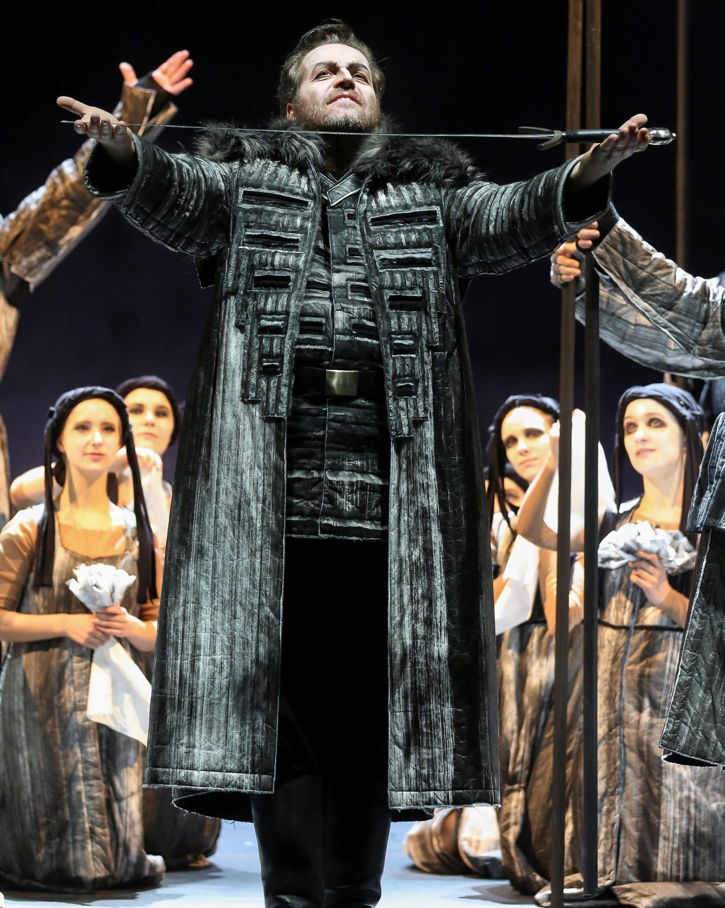

Lay of Igor's Campaign
- Features of oral/folk tradition: fixed epithets (swift steeds), animism (nature personified), fixed comparisons (bitva pir), lament, dream (Ch. 14), 3x repetitions (battle lasts three days)
- Elements of hagiography: rhetorical questions, elements of sermon - word of a saintly person teaching (The Golden Word of Prince Sviatoslav), elements of military tale (invoking holy scriptures)
- Hybrid work combining folk and hagiographic elements (see also Life of Peter and Fevronia)
- Question of authenticity: Dmitri Likhachev claims that it is an authentic 12th century work based on linguistic features and Zimin claims that it is a forgery produced in 18th century
